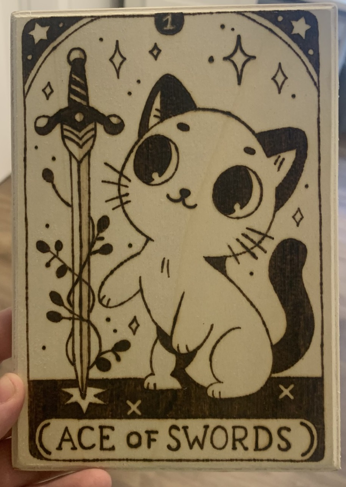
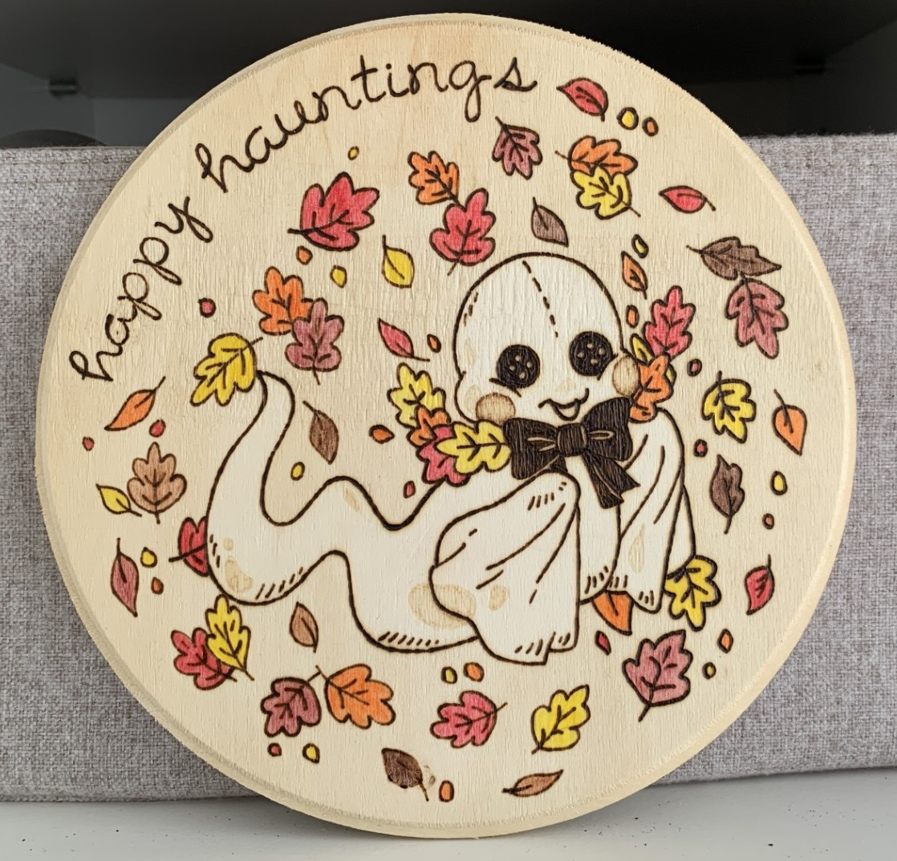
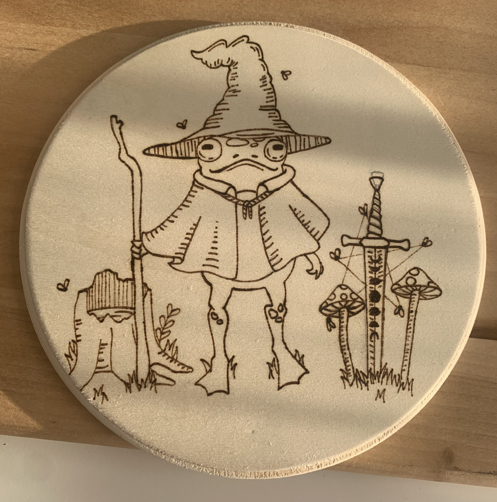

About Ava
Ava was born in Toledo, Ohio - and after traveling all the way around the world, she's landed back in Archbold. For now.
Having always had an appreciation for foreign languages and cultures, Ava studied Foreign Language Education at the
University of Toledo, concentrating in German. In an interesting twist, this led her to become an English teacher in Japan
(because, you know, that makes sense). Now though, she's left the education field, working a blue-collar
job while she studies computer programming at Northwest State Community College.
Her Travels
During her travels, Ava has visited 8 countries on two different continents. Her first trip abroad was to
Germany, where she studied abroad for an academic year at Leuphana University in Lüneburg.
She also did a summer abroad near the city of Göttingen, where she did volunteer work in a refugee camp.
Ava's next venture overseas came after graduating college, when she joined the Japan Exchange and Teaching (JET) Program as an
Assistant Language Teacher. She was stationed in Tokushima, one of the most remote regions of the country.
For three years she had a home among the beautiful mountain landscape there, teaching at Johoku Senior High School and
Tokushima Prefectural High School of Science and Technology (SciTechHi).
Other places Ava has visited include...
- Austria
- Switzerland
- The Netherlands
- England
- Ireland
- Italy
Ava in a plum blossom patch during spring time in Tokushima
Her Hobbies
Ava is in no way social, so she has to have many hobbies to fill up her free time. Her biggest passion is story telling, and
she hopes to publish a dystopian fiction series someday. In addition to writing, she also enjoys arts and crafts, specifically
woodburning. Her pieces often incorporate mystical elements such as tarot cards, crystals, and woodland critters.


